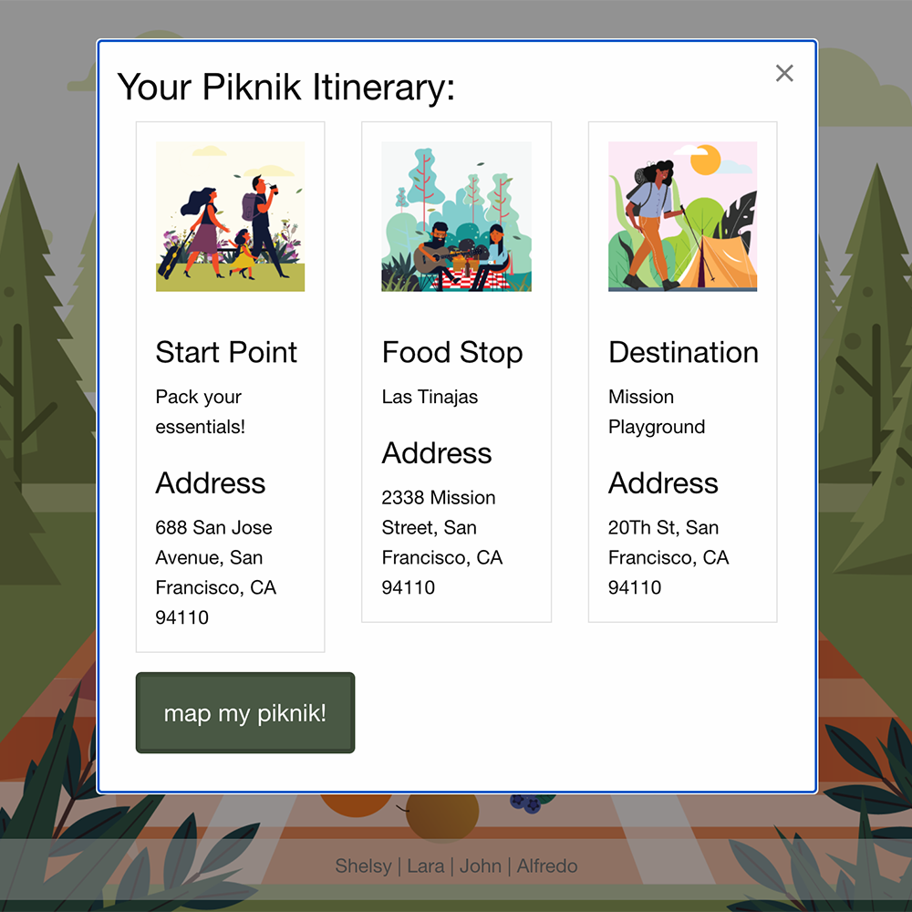
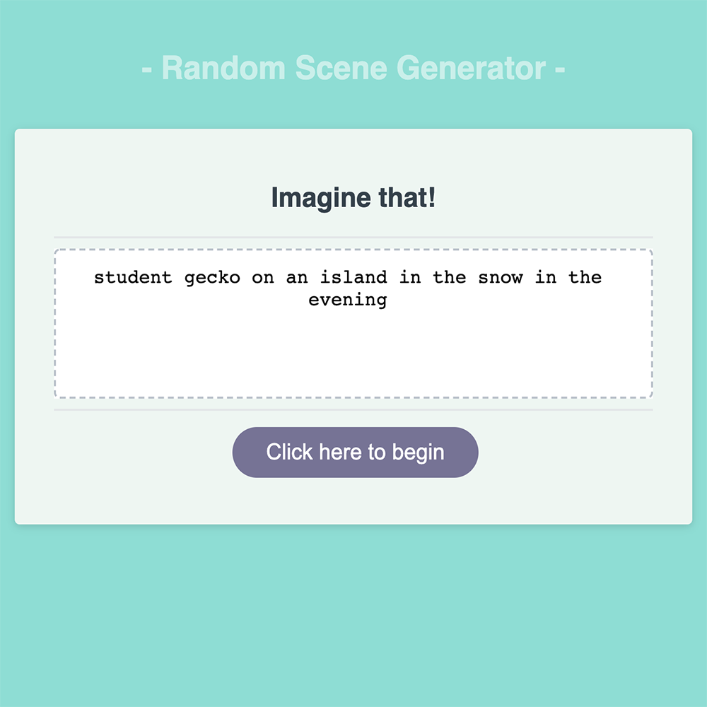
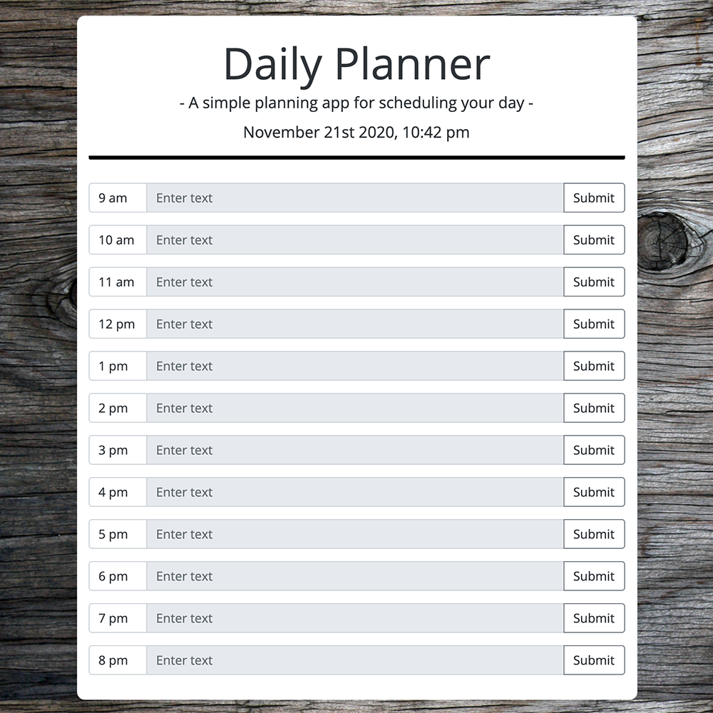

Alfredo Bracamontes-Ochoa
Projects
The projects listed below combine my interest in design, the outdoors, and problem solving.
Piknik

Whether you’re like me and just moved to a new city and don’t know where to start, or you’re looking to break out of your routine now that you’ve been stuck at home for the past few months, piknik can help you take the first step.
Imagine That

Whenever I need to draw inspiration for a drawing, I turn to this web application. Not only can I customize the drawing prompts, but it makes for some fun scenarios that would otherwise take me much longer to envision, if ever.
Daily Planner

This web application allows you to plan hourly tasks for the present day. While calendars and other note taking programs accommodate for weeks and months of planning, this daily planner will encourage to focus on what's important today.